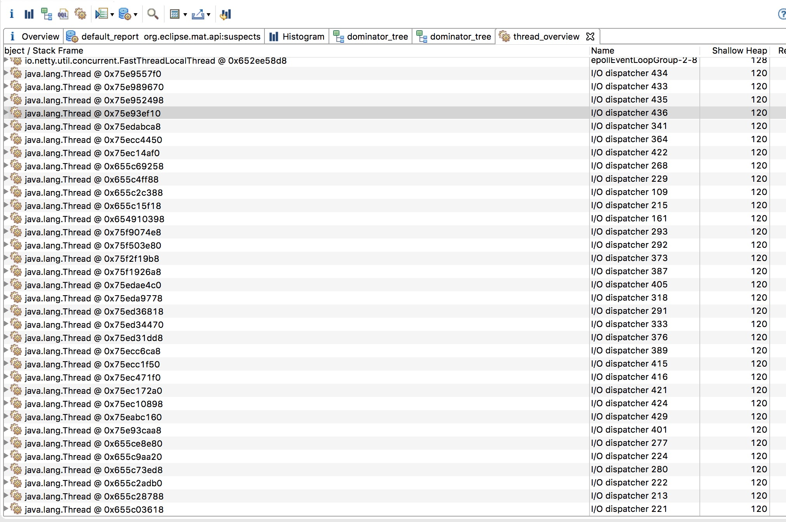

2017-01-03 我旁边的同事突然问我说怎么机器上账户切换不了了，提示Resource temporarily unavailable，条件反射是不是连接泄漏了（某干过这事 害怕～），ss -s了下 几百个连接而已 正常的不行，然后top了下，发现服务进程吃了19g的内存，估计就是内存泄漏了，导致连切换账户的资源都没有，于是问老大要了root 权限，想dump下堆栈和内存的，结果死活连不上jvm，无奈只能杀了进程重启了.
突发这种情况，案发现场又被我kill -9了，于是我同事只好默默的写起了脚本，模拟当时用户访问的情况，接下来的时间里，我同事就是跑着模拟脚本，盯着进程的内存看。跑了一天无果，在第三天的时候，同事终于重现犯罪现场了，内存在瞬间暴涨到9g，查了下日志，那段时间只有一种异常，捕获这种异常后会重置http client，这工程使用的是apache httpasyncclient，reset的代码如下，这个httpclient是个单例，估计是这里出了问题了
|
|
使用jmap dump出内存 jmap –dump:live,format=b,file=wtf.bin ${pid}
使用了eclipse mat对内存进行分析

这里看到I/O dispatcher 这类线程多达400多个，看了下线程调用堆栈基本都在epoll wait 也就是说这些线程都在跑 但是实际上httpclient只有一个引用，其余多出来的几百个线程都在空转而没被用到
再看看上面的 PoolingNHttpClientConnectionManager这个类 吃了大部分内存，至此确定了内存泄漏的原因了，由于线程一直在跑导致很多PoolingNHttpClientConnectionManager的内存都没被释放
至于为什么会出现这个问题，阅读了调用resetHttpsClient的代码 发现只要调用的时候抛异常了，就会调用resetHttpsClient一次，所以这里就有个问题了resetHttpsClient这个方法不是同步的，当多个请求同时调用的时候 会出现只有一个请求成功close（httpclient的 close是线程安全的）了httpclient，但是又会启动多个httpclient的情况 自然而然的就出现了内存泄漏了，至此问题就查出来了
关于问题的总结：
1:遇到异常就重新初始化是一个问题，太过于暴力了，异常有多种原因导致，而且通常情况下都是网络问题，这种情况只需要重新建立连接发起请求就行，不需要把线程池，还有NHttpClientConnectionManager之类的销毁掉，这些资源完全可以重用的。
2:线程安全！！！
3:关于httpclient单例的问题，一旦这个httpclient出现异常了，这种写法就算加锁了 线程安全了，还是会初始化很多httpclient，只是不会导致内存泄漏罢了，我倾向的写法是初始化2-3个httpclient在一个循环队列中，不断的轮训这些client，一旦出现需要重新初始化的情况，置当前的client的状态为不可用，丢到一个线程处理，成功后再把使用状态激活。
4：apcahe httpclient的代码好复杂，基于java的nio写的，如果能用上netty这种现成的轮子多舒服，也不用费劲的读httpclient 的ioloop的实现，而且发现一个http client所占用的资源非常多，不然内存也不会因为频繁的初始化就暴涨，看了下主要是在CPool这个类，这个是一个http的连接池，根据dump的结果算了下，吃的内存在30～70m